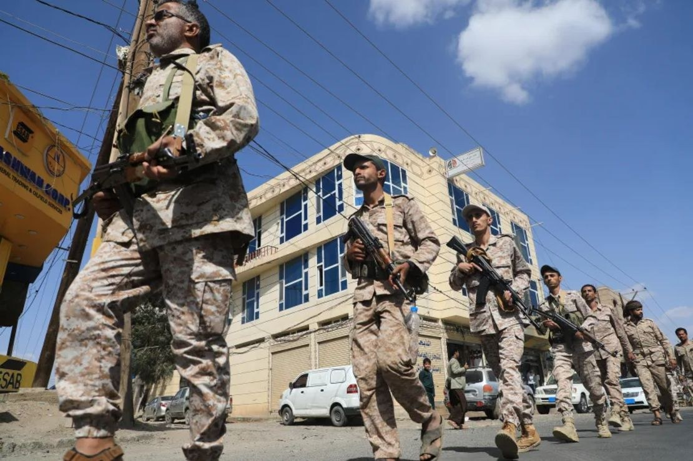

Imagen: AP
El 10 de octubre, el grupo yemení de los hutíes, aliado de Irán, atacó el aeropuerto de Riad, la capital de Arabia Saudita, matando a 13 personas e hiriendo a cientos. Se trata del ataque más letal contra cualquier país del Golfo desde febrero, cuando inició la guerra contra Teherán. No fue el único bombardeo de ese aeropuerto. La cuestión es que, justo del 11 al 15 de octubre, tendría lugar el Congreso Mundial de Energía en esa capital y que, del 26 al 29 de este mes, estaba previsto otro foro, considerado como el «Davos del Desierto»: la Future Investment Initiative. El primero tuvo infinidad de cancelaciones e interrupciones, mientras que el segundo tuvo que posponerse. Las consecuencias psicológicas, simbólicas, económicas y políticas de estos hechos son apenas una muestra de cómo y por qué los hutíes han sido tan eficaces en su confrontación con Arabia Saudita y sus aliados desde 2015. El tema acá es que hoy, en 2026, ya no hablamos solo de las implicaciones para la guerra civil en Yemen, sino de cómo esta dinámica se entreteje con Irán, con el 15% del comercio global que transita por el mar Rojo y con otros conflictos que colindan con ese mar, como los de Somalia, Sudán o incluso Etiopía.
1. Como contexto, los hutíes son una agrupación rebelde de Yemen, aliada de Irán, que controla la capital de ese país, Saná, desde 2014. A partir de 2015, Arabia Saudita formó una coalición de actores para respaldar al gobierno internacionalmente reconocido de ese país, que tuvo que huir a la ciudad de Adén.
2. Así que los ataques con misiles y drones contra infraestructura civil o energética saudí no son algo que comenzó ahora. Ya en 2019, por ejemplo, los hutíes reivindicaron un ataque contra Aramco, la petrolera saudí, que causó daños de tal magnitud que sorprendieron a todo el planeta, no solo por su impacto material y las afectaciones a la oferta de petróleo, sino también por la sofisticación del ataque. Esto llevó incluso a las agencias de inteligencia de EE. UU. y de Riad a concluir que los ataques procedían de Irán. Teherán lo negó y, además, los hutíes sostuvieron una ola de ataques similares. Como sea, esa agrupación fue comprendiendo el poder de sus capacidades asimétricas frente a un ejército mucho más poderoso, como el saudí.
3. Lo más importante de todo: Riad tuvo que aceptar que una campaña aérea contra los hutíes sería insuficiente para derrotarlos, especialmente porque las fuerzas leales al gobierno internacionalmente reconocido de Yemen eran claramente inferiores en esta guerra civil. Así, de la mejor manera que fue posible, se negoció un cese al fuego en 2022 que, aunque expiró formalmente ese mismo año, dio paso a una desescalada que se mantuvo hasta ahora.
4. Pero ya para 2026 hay que añadir al menos tres factores a la ecuación. (a) Primero, los hutíes entendieron mucho mejor el poder de su geografía cuando, al sumarse a la lucha de Hamás contra Israel, ensayaron la obstaculización de la navegación comercial, atacando y secuestrando barcos mercantes que buscaban transitar por el mar Rojo. (b) Segundo, Trump 2.0 no es el mismo que en su gestión previa. Mientras que entonces ese presidente se mostró mucho más contenido en sus intervenciones en la región, en esta ocasión no solo decidió lanzar la mayor escalada contra Irán que hemos visto, sino que, desde 2025, lanzó su primera campaña militar precisamente contra los hutíes. La cuestión es que, una vez más, los hutíes utilizaron eficazmente el poder de sus ataques asimétricos y resistieron esa campaña durante el tiempo suficiente para agotar la paciencia de Trump. Así, esto terminó por empoderarlos aún más. Ahora no solo eran los héroes que representaban la lucha contra el enemigo sionista, sino también la lucha contra el colonialismo y la dominación que, en su discurso, representa el Gran Satán, Washington. (c) El tercer factor es Irán. A lo largo de todos estos años, Teherán se ha encargado de proveer a los hutíes de más y mejor armamento, así como de entrenarlos en las tácticas que hoy podemos observar.
5. Así, tenemos que leer estos factores de manera combinada: tácticas asimétricas exitosas y expandidas, victorias simbólicas y psicológicas frente a actores poderosos, y un mejor armamento junto con una mayor experiencia de combate. Todo ello se traduce en una suma de componentes que dificulta cualquier intento de disuasión contra esa organización.
6. Pero, por otro lado, desde hace mucho sabíamos que el conflicto con Irán podía escalar hasta Yemen y el mar Rojo. Si bien los hutíes titubearon al principio, las circunstancias terminaron por arrastrarlos y por mostrar esta otra herramienta con la que contaba Teherán.
7. Para efectos del comercio global, lo que estaba en riesgo, como hemos visto, era un efecto pinza: al generar suficiente disrupción en la navegación a través de dos estrechos cruciales, el costo para la economía global, para Estados Unidos y para todos sus aliados se elevaría a tal nivel que resultaría imposible continuar las hostilidades contra Teherán y su eje.
8. Para entender la base de esta estrategia, implementada tanto por Irán como por sus aliados hutíes, hay que considerar que estos actores no necesitan “cerrar” esos estrechos, clausurar la capacidad energética de la región o destruir infraestructura, como los aeropuertos. La clave está en el miedo y la inestabilidad que producen, en la percepción de riesgo al navegar por la zona, o al invertir e incluso viajar a la región, y en los costos económicos y financieros asociados. Basta con golpear un aeropuerto como el de Riad un par de veces, atacar algunas embarcaciones o dañar un oleoducto como el que transporta el petróleo saudí del este al oeste de la península. Así, incluso si Washington establece un operativo de protección para facilitar el tránsito del petróleo, los costos de los seguros, la transportación y las materias primas pueden elevarse lo suficiente como para otorgar victorias cruciales a Irán y los hutíes.
9. Una nota importante: los hutíes son, dentro del eje de alianzas de Irán, no solo su socio más independiente, sino también el más empoderado por los factores que arriba señalo. Esto les permite operar autónomamente y tomar decisiones orientadas a sus propias metas estratégicas, muchas de las cuales están alineadas con Teherán, pero no todas. Por ello, negociar con Irán un cese al fuego o la liberación de Ormuz no significa automáticamente resolver el conflicto reactivado en Yemen, que responde a dinámicas paralelas y entretejidas, pero no idénticas.
10. El problema es que Riad tiene opciones limitadas. Solicitar ayuda a sus aliados, como Washington, Turquía o Pakistán, no garantiza una victoria. Una intervención terrestre de mayor escala tampoco asegura el éxito ante las tácticas de guerrilla de los hutíes. La otra opción para el reino saudí es negociar en términos no demasiado favorables.
11. Pero hay un factor adicional: las ondas expansivas de este conflicto son importantes. Por un lado, los reportes de colaboración entre los hutíes y organizaciones africanas como Al Shabab en Somalia, afiliada a Al Qaeda, son cada vez más frecuentes. Estas agrupaciones ya no solo colaboran en el tráfico de armas, sino también en una mayor coordinación de conocimientos y operaciones a través de un mar crucial para las cadenas de suministro globales. Y esta creciente competencia por la influencia y el control estratégico de las rutas del mar Rojo también ayuda a entender otros movimientos en la región. Israel se convirtió hace unos meses en el único país del mundo que reconoce la independencia de Somalilandia, una región separatista de Somalia ubicada justo en el corazón geográfico de todo lo que señalo. Jerusalén busca establecer una base militar en ese territorio y Trump se inclina por favorecer esta iniciativa.
12. Otros conflictos de la región, como los de Sudán y Etiopía, también tienen componentes relacionados con el acceso a esta ruta del mar Rojo y se están internacionalizando de manera preocupante.
En suma, ya nada puede quedar completamente aislado. Entender quiénes son los hutíes y cómo han construido su poder y sus capacidades asimétricas es algo que no solo EE. UU. podía y debía prever antes de desatar esta caja de Pandora. También implica reconocer que todo esto está mucho menos “lejos” de lo que podría parecernos desde México y que debe formar parte de las estrategias de mitigación de riesgos de gobiernos y empresas en todo el planeta.
CIPMEX · Centro de Investigación para la Paz México, A.C. · Paz que se piensa, paz que se construye